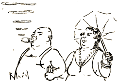

Mi vidis ilin ĉe l' marbordo
En bankostumo, sen rembur',
Reveni al natura ordo,
Al pralinioj de l' figur' ;
Mi vidis ilin sen glazuro,
Sen ŝminkoŝel' de l' civiliz'
Kaj kiaj ilin la naturo
Prezentis iam: ... sen ĉemiz' ...
* * *
Vestita nur per inkognito
La baronin' ne pensas plu
Pri teda devo de vizito
En la salonoj de l' enu';
Kaj se mi fidas al lorneto,
Ŝi liberigis de bandaĝ',
De brustoŝnuroj kaj korseto
La ĉarmojn de matura aĝ'.
Sed tiuj ĉarmoj sen hezito
Aplikas sekvon de l' instru'
Kaj siavice, por vizito,
La mamoj kuras al genu' ...
El kio ni konkludas prave
Eternan veron de l' maksim' :
„ Se la natur' nin tenas sklave,
Pli sklave tenas nin kutim'! “
* * *
Ĉe l' mara bordo eĉ ministro
Sin kredas en la paradiz',
Kaj li dum ripoziga distro
Forgesas grincon de la Kriz';
Li ludas nun kun sia filo
Kaj donas pruvojn de kapabl'
Farante per ludŝovelilo
Profundajn truojn en la sabl' ...
Ne diru, ke mi moke ŝercas
Per senpripensa rimo-ĵet'!
Li tre verŝajne sin ekzercas
Por ... fari truojn en budĝet'.
El kio ni konkludas prave
Eternan veron de l' maksim':
„ Se la natur' nin tenas sklave,
Pli sklave tenas nin kutim'! “

Sinjoro Hak. ― Ni lin suspektas
Pri novriĉula pozici'.
Ĉar sinjorino Hak aspektas
Kiel juvelekspozici';
Li tre riĉiĝis, ― jes ni scias,
Sed kie do? En kiu fak'?
Aŭskultu, ― nun konversacias
Kun la edzin' sinjoro Hak:
„ Se tiuj nudaj hom-amasoj
Nun sekvus min kun karn' kaj ost',
Cent kilometrojn da kolbasoj
Mi farus je malalta kost'! “
El kio ni konkludas prave
Eternan veron de l' maksim':
„ Se la natur' nin tenas sklave,
Pli sklave tenas nin kutim'! “
Kaj bankieron ni invitis:
„ Nin akompanu al la grot',
Ĉar vi neniam ĝin vizitis,
Alkuru do kun ban-trikot';
Ni tie banos nin libere
Sen ia timo de delfen',
Ĉar tiu groto taŭgas vere
Mirinde kiel ban-basen'! “
Li tiam preĝis al ĉielo
Tremante kvazaŭ pro komplot':
„ Ho bona Di' de Izraelo,
Protektu min de la ... bangrot'! “
El kio ni konkludas prave
Eternan veron de l' maksim':
„ Se la natur' nin tenas sklave,
Pli sklave tenas nin kutim'! “